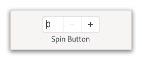

Gtk.SpinButton¶
Example¶
- Subclasses
None
Methods¶
- Inherited
Gtk.Widget (181), GObject.Object (37), Gtk.Accessible (15), Gtk.Buildable (1), Gtk.CellEditable (3), Gtk.Editable (27), Gtk.Orientable (2)
- Structs
class |
|
class |
|
|
|
|
|
|
|
|
|
|
|
|
|
|
|
|
|
|
|
|
|
|
|
|
|
|
|
|
|
|
|
|
|
|
|
|
Virtual Methods¶
Properties¶
- Inherited
Gtk.Widget (34), Gtk.Accessible (1), Gtk.CellEditable (1), Gtk.Editable (8), Gtk.Orientable (1)
Name |
Type |
Flags |
Short Description |
|---|---|---|---|
r/w/en |
|||
r/w/en |
|||
r/w/en |
|||
r/w/en |
|||
r/w/en |
|||
r/w/en |
|||
r/w/en |
|||
r/w/en |
Signals¶
Name |
Short Description |
|---|---|
Emitted when the user initiates a value change. |
|
Emitted to convert the users input into a double value. |
|
Emitted to tweak the formatting of the value for display. |
|
Emitted when the value is changed. |
|
Emitted right after the spinbutton wraps from its maximum to its minimum value or vice-versa. |
Fields¶
Class Details¶
- class Gtk.SpinButton(**kwargs)¶
- Bases
Gtk.Widget,Gtk.AccessibleRange,Gtk.CellEditable,Gtk.Editable,Gtk.Orientable- Abstract
No
A
GtkSpinButtonis an ideal way to allow the user to set the value of some attribute.An example
Gtk.SpinButtonRather than having to directly type a number into a
GtkEntry,GtkSpinButtonallows the user to click on one of two arrows to increment or decrement the displayed value. A value can still be typed in, with the bonus that it can be checked to ensure it is in a given range.The main properties of a
GtkSpinButtonare through an adjustment. See the [class`Gtk`.Adjustment] documentation for more details about an adjustment’s properties.Note that
GtkSpinButtonwill by default make its entry large enough to accommodate the lower and upper bounds of the adjustment. If this is not desired, the automatic sizing can be turned off by explicitly setting [property`Gtk`.Editable:width-chars] to a value != -1.- Using a
Gtk.SpinButtonto get an integer
```c // Provides a function to retrieve an integer value from a
Gtk.SpinButton// and creates a spin button to model percentage values.int grab_int_value (
Gtk.SpinButton*button,objectuser_data) { returnGtk.SpinButton.get_value_as_int(button); }void create_integer_spin_button (void) {
Gtk.Widget*window, *button;Gtk.Adjustment*adjustment;adjustment =
Gtk.Adjustment.new(50.0, 0.0, 100.0, 1.0, 5.0, 0.0);window =
Gtk.Window.new();// creates the spinbutton, with no decimal places button =
Gtk.SpinButton.new(adjustment, 1.0, 0);Gtk.Window.set_child(GTK_WINDOW (window), button);Gtk.Window.present(GTK_WINDOW (window)); } ```- Using a
Gtk.SpinButtonto get a floating point value
```c // Provides a function to retrieve a floating point value from a //
Gtk.SpinButton, and creates a high precision spin button.float grab_float_value (
Gtk.SpinButton*button,objectuser_data) { returnGtk.SpinButton.get_value(button); }void create_floating_spin_button (void) {
Gtk.Widget*window, *button;Gtk.Adjustment*adjustment;adjustment =
Gtk.Adjustment.new(2.500, 0.0, 5.0, 0.001, 0.1, 0.0);window =
Gtk.Window.new();// creates the spinbutton, with three decimal places button =
Gtk.SpinButton.new(adjustment, 0.001, 3);Gtk.Window.set_child(GTK_WINDOW (window), button);Gtk.Window.present(GTK_WINDOW (window)); } ```- CSS nodes
`` spinbutton.horizontal ├── text │ ├── undershoot.left │ ╰── undershoot.right ├── button.down ╰── button.up ``
`` spinbutton.vertical ├── button.up ├── text │ ├── undershoot.left │ ╰── undershoot.right ╰── button.down ``
GtkSpinButton``s main CSS node has the name spinbutton. It creates subnodes for the entry and the two buttons, with these names. The button nodes have the style classes .up and .down. The ``GtkTextsubnodes (if present) are put below the text node. The orientation of the spin button is reflected in the .vertical or .horizontal style class on the main node.- Accessibility
GtkSpinButtonuses theGtk.AccessibleRole.SPIN_BUTTONrole.- classmethod new(adjustment, climb_rate, digits)[source]¶
- Parameters
adjustment (
Gtk.AdjustmentorNone) – theGtkAdjustmentthat this spin button should useclimb_rate (
float) – specifies by how much the rate of change in the value will accelerate if you continue to hold down an up/down button or arrow keydigits (
int) – the number of decimal places to display
- Returns
The new
GtkSpinButton- Return type
Creates a new
GtkSpinButton.
- classmethod new_with_range(min, max, step)[source]¶
- Parameters
- Returns
The new
GtkSpinButton- Return type
Creates a new
GtkSpinButtonwith the given properties.This is a convenience constructor that allows creation of a numeric
GtkSpinButtonwithout manually creating an adjustment. The value is initially set to the minimum value and a page increment of 10 * step is the default. The precision of the spin button is equivalent to the precision of step.Note that the way in which the precision is derived works best if step is a power of ten. If the resulting precision is not suitable for your needs, use [method`Gtk`.SpinButton.set_digits] to correct it.
- configure(adjustment, climb_rate, digits)[source]¶
- Parameters
adjustment (
Gtk.AdjustmentorNone) – aGtkAdjustmentto replace the spin button’s existing adjustment, orNoneto leave its current adjustment unchangedclimb_rate (
float) – the new climb ratedigits (
int) – the number of decimal places to display in the spin button
Changes the properties of an existing spin button.
The adjustment, climb rate, and number of decimal places are updated accordingly.
- get_adjustment()[source]¶
- Returns
the
GtkAdjustmentof self- Return type
Get the adjustment associated with a
GtkSpinButton.
- get_climb_rate()[source]¶
- Returns
the acceleration rate
- Return type
Returns the acceleration rate for repeated changes.
- get_increments()[source]¶
- Returns
- step
location to store step increment
- page
location to store page increment
- Return type
Gets the current step and page the increments used by self.
See [method`Gtk`.SpinButton.set_increments].
- get_range()[source]¶
- Returns
- min
location to store minimum allowed value
- max
location to store maximum allowed value
- Return type
Gets the range allowed for self.
See [method`Gtk`.SpinButton.set_range].
- get_update_policy()[source]¶
- Returns
the current update policy
- Return type
Gets the update behavior of a spin button.
See [method`Gtk`.SpinButton.set_update_policy].
- get_value_as_int()[source]¶
- Returns
the value of self
- Return type
Get the value self represented as an integer.
- get_wrap()[source]¶
-
Returns whether the spin button’s value wraps around to the opposite limit when the upper or lower limit of the range is exceeded.
- set_adjustment(adjustment)[source]¶
- Parameters
adjustment (
Gtk.Adjustment) – aGtkAdjustmentto replace the existing adjustment
Replaces the
GtkAdjustmentassociated with self.
- set_climb_rate(climb_rate)[source]¶
- Parameters
climb_rate (
float) – the rate of acceleration, must be >= 0
Sets the acceleration rate for repeated changes when you hold down a button or key.
- set_digits(digits)[source]¶
- Parameters
digits (
int) – the number of digits after the decimal point to be displayed for the spin button’s value
Set the precision to be displayed by self.
Up to 20 digit precision is allowed.
- set_increments(step, page)[source]¶
- Parameters
Sets the step and page increments for spin_button.
This affects how quickly the value changes when the spin button’s arrows are activated.
- set_numeric(numeric)[source]¶
- Parameters
numeric (
bool) – flag indicating if only numeric entry is allowed
Sets the flag that determines if non-numeric text can be typed into the spin button.
- set_range(min, max)[source]¶
-
Sets the minimum and maximum allowable values for self.
If the current value is outside this range, it will be adjusted to fit within the range, otherwise it will remain unchanged.
- set_snap_to_ticks(snap_to_ticks)[source]¶
- Parameters
snap_to_ticks (
bool) – a flag indicating if invalid values should be corrected
Sets the policy as to whether values are corrected to the nearest step increment when a spin button is activated after providing an invalid value.
- set_update_policy(policy)[source]¶
- Parameters
policy (
Gtk.SpinButtonUpdatePolicy) – aGtkSpinButtonUpdatePolicyvalue
Sets the update behavior of a spin button.
This determines whether the spin button is always updated or only when a valid value is set.
- set_wrap(wrap)[source]¶
- Parameters
wrap (
bool) – a flag indicating if wrapping behavior is performed
Sets the flag that determines if a spin button value wraps around to the opposite limit when the upper or lower limit of the range is exceeded.
- spin(direction, increment)[source]¶
- Parameters
direction (
Gtk.SpinType) – aGtkSpinTypeindicating the direction to spinincrement (
float) – step increment to apply in the specified direction
Increment or decrement a spin button’s value in a specified direction by a specified amount.
Signal Details¶
- Gtk.SpinButton.signals.change_value(spin_button, scroll)¶
- Signal Name
change-value- Flags
- Parameters
spin_button (
Gtk.SpinButton) – The object which received the signalscroll (
Gtk.ScrollType) – aGtkScrollTypeto specify the speed and amount of change
Emitted when the user initiates a value change.
This is a keybinding signal.
Applications should not connect to it, but may emit it with g_signal_emit_by_name() if they need to control the cursor programmatically.
The default bindings for this signal are Up/Down and PageUp/PageDown.
- Gtk.SpinButton.signals.input(spin_button)¶
- Signal Name
input- Flags
- Parameters
spin_button (
Gtk.SpinButton) – The object which received the signal- Returns
Truefor a successful conversion,Falseif the input was not handled, andGtk.INPUT_ERRORif the conversion failed.- new_value
return location for the new value
- Return type
Emitted to convert the users input into a double value.
The signal handler is expected to use [method`Gtk`.Editable.get_text] to retrieve the text of the spinbutton and set new_value to the new value.
The default conversion uses
GLib.strtod().
- Gtk.SpinButton.signals.output(spin_button)¶
- Signal Name
output- Flags
- Parameters
spin_button (
Gtk.SpinButton) – The object which received the signal- Returns
Trueif the value has been displayed- Return type
Emitted to tweak the formatting of the value for display.
```c // show leading zeros static
boolon_output (Gtk.SpinButton*spin,objectdata) {Gtk.Adjustment*adjustment;str*text; int value;adjustment =
Gtk.SpinButton.get_adjustment(spin); value = (int):obj:Gtk.Adjustment.get_value (adjustment); text = g_strdup_printf (“%02d”, value);Gtk.Editable.set_text(GTK_EDITABLE (spin), text):GLib.free(text);return
True; } ```
- Gtk.SpinButton.signals.value_changed(spin_button)¶
- Signal Name
value-changed- Flags
- Parameters
spin_button (
Gtk.SpinButton) – The object which received the signal
Emitted when the value is changed.
Also see the [signal`Gtk`.SpinButton::output] signal.
- Gtk.SpinButton.signals.wrapped(spin_button)¶
- Signal Name
wrapped- Flags
- Parameters
spin_button (
Gtk.SpinButton) – The object which received the signal
Emitted right after the spinbutton wraps from its maximum to its minimum value or vice-versa.
Property Details¶
- Gtk.SpinButton.props.adjustment¶
- Name
adjustment- Type
- Default Value
- Flags
The adjustment that holds the value of the spin button.
- Gtk.SpinButton.props.climb_rate¶
- Name
climb-rate- Type
- Default Value
0.0- Flags
The acceleration rate when you hold down a button or key.
- Gtk.SpinButton.props.digits¶
- Name
digits- Type
- Default Value
0- Flags
The number of decimal places to display.
- Gtk.SpinButton.props.numeric¶
- Name
numeric- Type
- Default Value
- Flags
Whether non-numeric characters should be ignored.
- Gtk.SpinButton.props.snap_to_ticks¶
- Name
snap-to-ticks- Type
- Default Value
- Flags
Whether erroneous values are automatically changed to the spin buttons nearest step increment.
- Gtk.SpinButton.props.update_policy¶
- Name
update-policy- Type
- Default Value
- Flags
Whether the spin button should update always, or only when the value is acceptable.
- Gtk.SpinButton.props.value¶
- Name
value- Type
- Default Value
0.0- Flags
The current value.